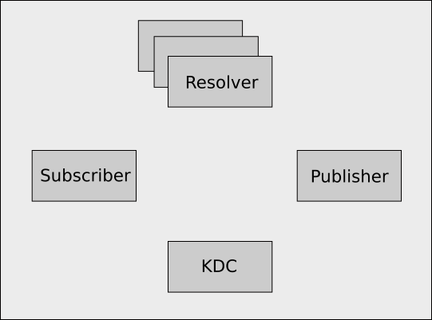
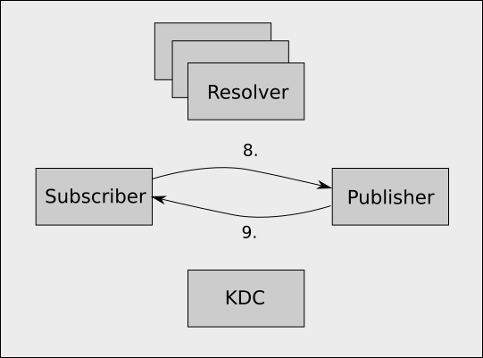

Subscription Flow
Sometimes debugging problems requires a more detailed understanding of exactly what steps are involved in a subscription.
Components

In the full kerberos enabled version of netidx the following components are involved.
- The Kerberos 5 KDC (Key Distribution Center). e.g. The AD Domain Controller.
- Resolver Cluster, holds the path of everything published and the address of the publisher publishing it.
- Subscriber
- Publisher, holds the actual data, and has previously told the resolver server about the path of all the data it has.
Step 1

- The Subscriber asks the KDC for a service ticket to talk to the Resolver Cluster. Note this only happens once for each user for some amount of time (usually hours), after which the service ticket is cached. The subscriber proves it's identity to the KDC using it's TGT.
- The KDC, having checked the validity of the subscriber's identity, generates a service ticket for the resolver server cluster. NOTE, Kerberos does not make authorization decisions, it merely allows entities to prove to each other that they are who they claim to be.
Step 2

- The Subscriber uses the service ticket to establish an encrypted GSSAPI session with the Resolver Cluster.
- Using the session it just established sends a resolve request for the paths it wants to subscribe to. All traffic is encrypted using the session.
- The Resolver Cluster verifies the presented GSSAPI token and
establishes a secure session, looks up the requested paths, and
returns a number of things to the subscriber for each path.
- The addresses of all the publishers who are publishing that path
- The service principal names of those publishers
- The permissions the subscriber has to the path
- The authorization token, which is a SHA512 hash of the concatenation of
- A secret shared by the Resolver Cluster and the Publisher
- The path
- The permissions
Step 3

- The subscriber picks a random publisher from the set of publishers publishing the path it wants, and requests a service ticket for that publisher's SPN from the KDC.
- The KDC validates the subscriber's TGT and returns a service ticket for the requested SPN, which will be cached going forward (usually for several hours).
Step 4

-
The subscriber uses the service ticket it just obtained to establish an encrypted GSSAPI session with the publisher, and using this session it sends a subscribe request, which consists of,
- The path it wants to subscribe to
- The permissions the resolver cluster gave to it
- The authorization token
-
The publisher validates the subscriber's GSSAPI token and establishes an encrypted session, and then reads the subscribe request. It looks up the request path, and assuming it is publishing that path, it constructs a SHA512 hash value of,
- The secret it shared with the resolver cluster when it initially published the path.
- The path the subscriber is requesting
- The permissions the subscriber claims to have
It then checks that it's constructed auth token matches the one the subscriber presented. Since the subscriber does not know the secret the publisher shared with the resolver server it is computationally infeasible for the subscriber to generate a valid hash value for an arbitrary path or permissions, therefore checking this hash is an effective proof that the resolver cluster really gave the subscriber the permissions it is claiming to have.
Assuming all the authentication and authorization checks out, and the publisher actually publishes the requested value, it sends the current value back to the publisher along with the ID of the subscription.
Whenever the value changes the publisher sends the new value along with the ID of the subscription to the publisher (encrypted using the GSSAPI session, and over the same TCP session that was established earlier).
In the case netidx is not configured to use kerberos the KDC is not involved, and none of the authentication or authorization tokens are established/sent, it's just a simple matter of look up the address from the resolver, and then subscribe to the publisher. In that case all data goes in the clear.